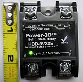

(Insulated gated bipolar Transistor)
Es un transistor bipolar controaldo por una puerta aislada.
The switch between the inductance and the common is implemented, nowadays, with an electronic device name IGBT (Isolated Gate Bipolar Transistor). These devices are able to sustain high voltages when in the open mode (in the order of 1200V to 3500V) while conducting high currents in the closed mode (thousands of Amps). They are the most stressed components in the converter and therefore that most influence its reliability. This characteristic also conditions how the are delivered, normally in packages together with protection diodes or set of several units to ease the coupling with heat sinks. (see below
|
Simbolo típico asociado a los IGBTs |
IGBT equivalent circuit |
|
Los IGBTs se suelen vender en unidades independientes o también empaquetados por unidades que facilitan su interconexión y montaje (fuente Wikipedia.com) |
|
|
Hasta 1200 Amps y 3300V |
 Hasta 30 Amps y 900V |